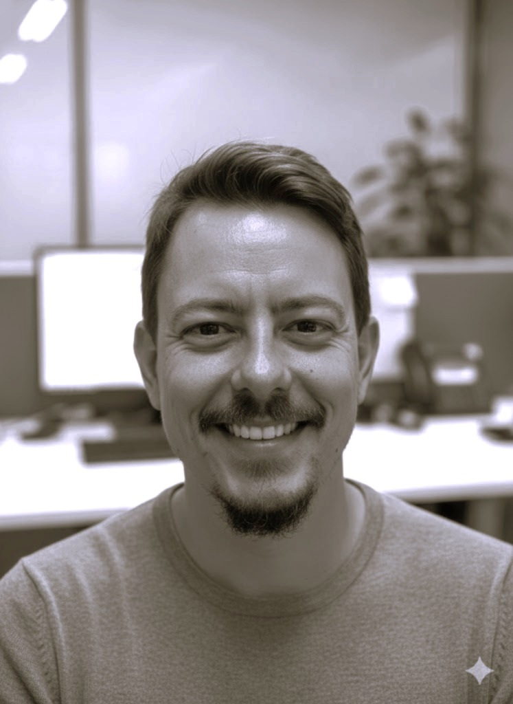

Fausto Sá Teles
Running little experiments. Asking big questions.
We're living through the fastest technological shift in human history. Some people are oblivious. Others are in panic. I prefer to stay curious, try to build things, and help shape the rules.
By day, I advise the Brazilian Congress on tech and infrastructure policy. By night (and weekends), I tinker — building small tools, writing about what I learn, and trying to make sense of where we're headed.
Fausto Sá Teles
Pequenos experimentos. Grandes perguntas.
Estamos vivendo a transição tecnológica mais rápida da história. Algumas pessoas ignoram. Outras entram em pânico. Eu prefiro manter a curiosidade, tentar construir coisas e ajudar a moldar as regras.
De dia, assessoro o Congresso brasileiro em políticas de tecnologia e infraestrutura. De noite (e fins de semana), eu experimento — construindo pequenas ferramentas, escrevendo sobre o que aprendo e tentando entender para onde estamos indo.